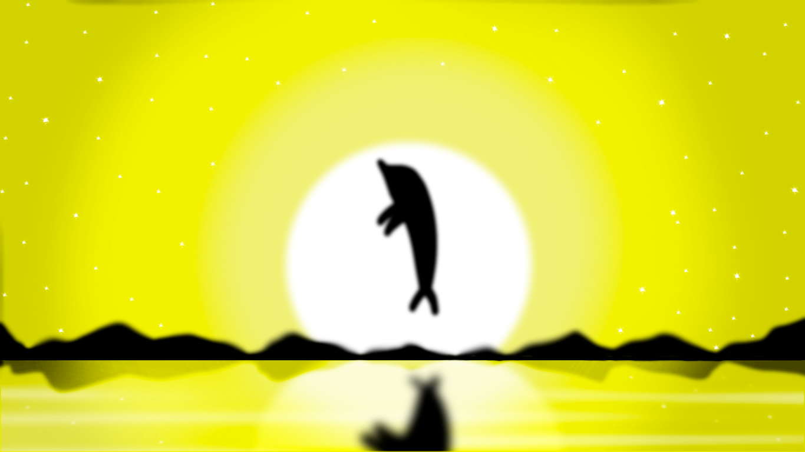
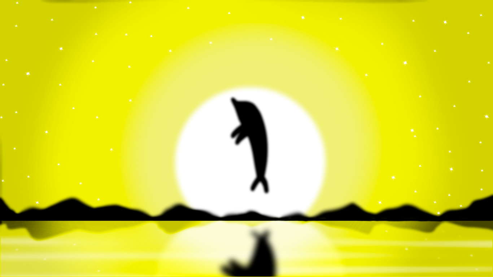

Deivi
Deivi tem 22 anos, e também foi um experimento de laboratório, mas diferentes dos outros, ele acabou morrendo durante os testes por envenenamento, então venderam seu corpo ao exercito estadunidense para outros testes, mas durante a transferencia do corpo, ele acabou voltando a vida, e desde então o país vem usando ele e seus poderes como arma de guerra, para maioria dos problemas, Deivi recebia autorização para utilizar seus poderes, porém o General de Exército temia que ele ficasse muito forte e se voltasse contra eles, então a vida de Deivi se resumiu a limitações de força e de personalidade.
Ele tem o controle das plantas, e isso vai desde usá-las em batalha, como também desenvolver cura e até conversar com as mesmas, desde que foi resgatado da opressão do exercíto, dedicou a vida não só a família, como também ao seus relacionamentos com todos os seres vivos, depois de ver tantas mortes causadas por ele e seus companheiros de guerra, ele só desejou a paz.
Deivi é um rapaz simpático que praticamente iniciou a sua vida agora, então sua mente voltou de onde parou, na sua infância, por isso Deivi tem alguns comportamentos infantis, como uma criança que só quer se divertir e aproveitar a vida, e com a ajuda de seus irmão, ele está aproveitando esta fase para assim prosseguir a sua vida normalmente, mesmo que um pouco tarde.
Paleta de Cores
A paleta de cores foi extraida do site oficial da Adobe Color, utilizando as ferramentas de acessibilidade para daltônicos.

 
